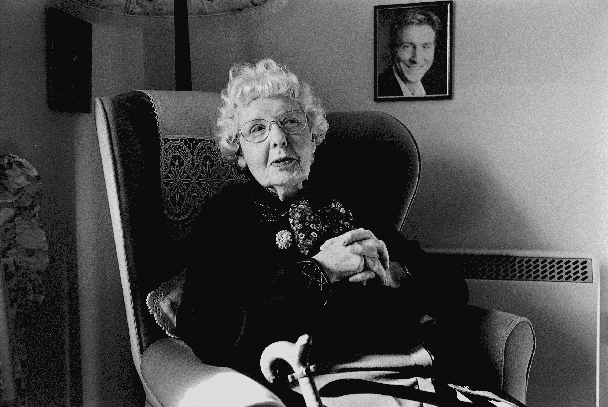

NORAH MACKNEY
| CATALOGUE | INTERVIEW | TRANSCRIPT |
BORN: Southampton, Hampshire, 1912
LIVED: Dulverton
RECORDING MADE: 2001
RECORDING LENGTH: 1 hour 16 minutes
Norah Mackney's parents were contortionists, often away on tour, and she had an unhappy childhood. She met her husband Tom when working in a drapery business. In 1951 they moved to Dulverton, to take over Thornes, renaming it Mackneys. They were there 27 years, stocking everything from a pin to a pram.
Originally considered snooty townies by the local people, they became leading lights in the Dulverton Players. She was 78 when she played in her last performance, "Waiting in the Wings". After they sold up she continued working in other shops in the town. She loved it and was 83 when she finally retired.
Photograph by Mark J. Rattenbury